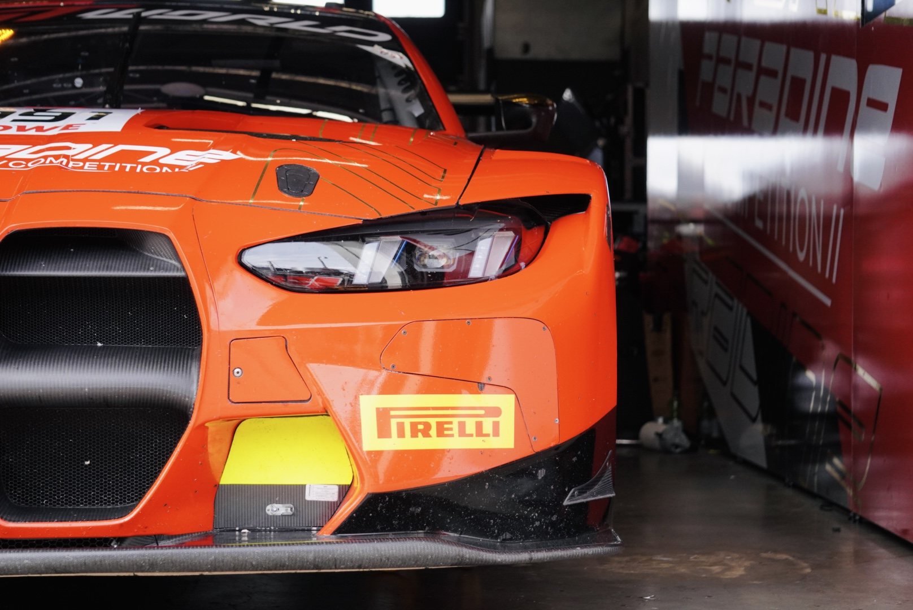
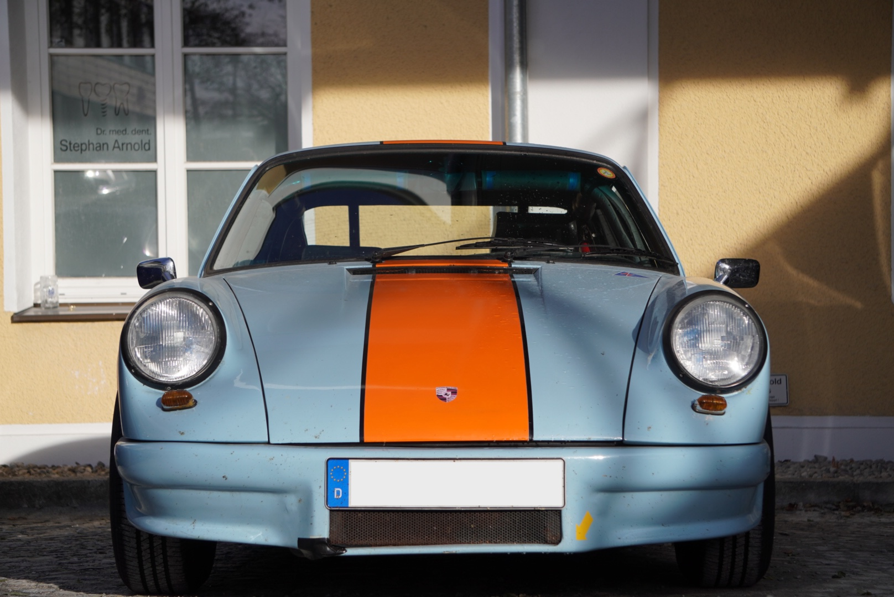

Driven by passion. Captured with purpose.
The art of speed
More than a just a picture.
A passion.
A photograph captures more than a moment. It tells a story, reveals hidden details and captures the essence of speed.
Let’s create something ↗


Behind the lens
Stories worth
remembering.
Hello, my name is Julie and I'm 20 years old. I am a car photographer based in Germany and Luxembourg. Photography has been a big part of my life and what started as a passion has grown into something I truly love. To me, photography is about more than just taking pictures - it's about telling stories, constantly exploring new perspectives. Over time, it became a way of seeing the world differently. Take a closer look and discover the stories behind some of the shots.
Read the journal ↗Have a project in mind?
Where ideas become
reality!
julka.welter@hotmail.com ↗
Car photography · Germany / Luxembourg · Available for projects